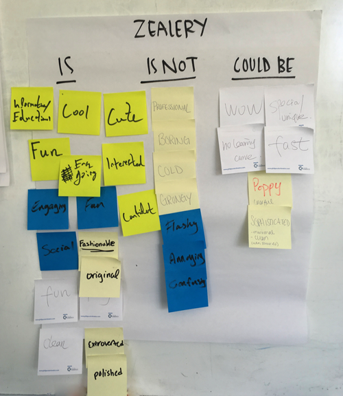
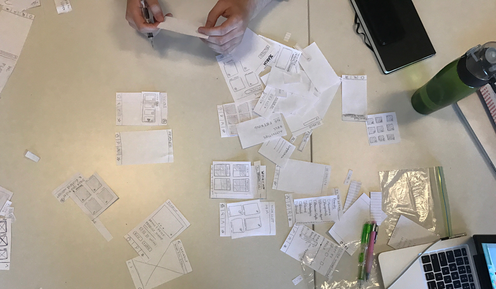
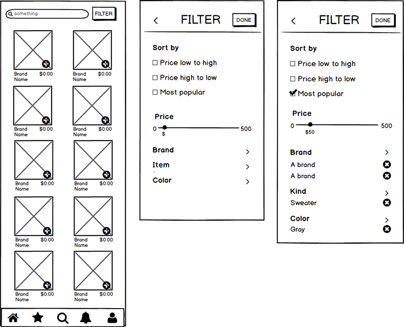
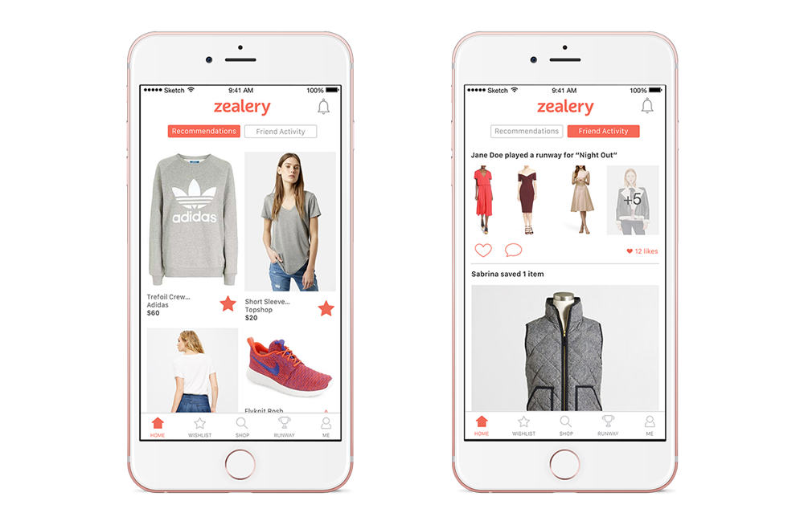
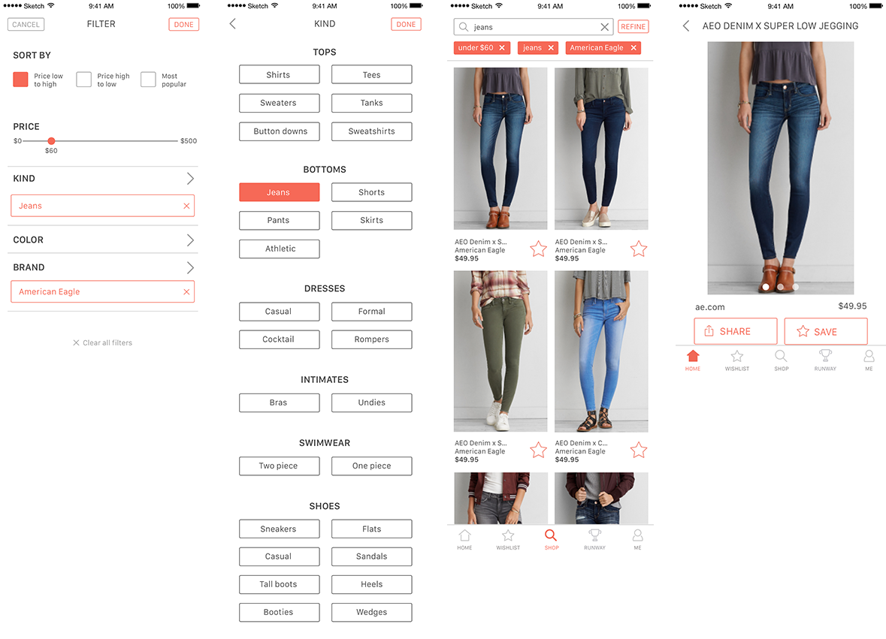
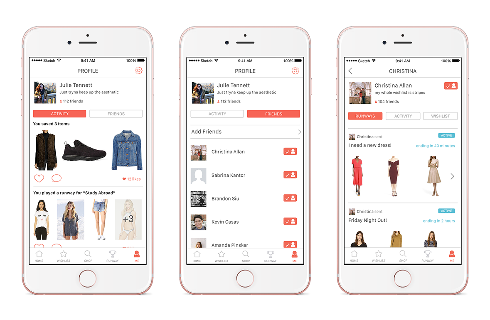
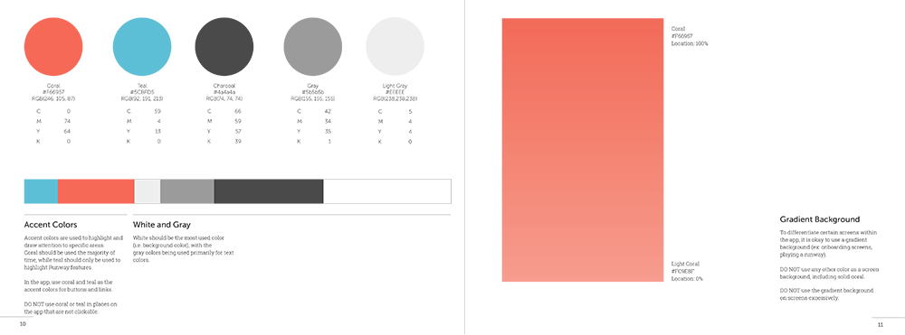

Our studio followed an Agile/scrum process, modified for the edition of an
extended research and discovery phase, as well as concurrent branding. We began
the first three weeks of our semester doing branding exercises with the client,
crafting user surveys to gain a better understanding of our target audience and
their experience around shopping, and compiling resources and research to get our
heads around what Zealery is and what it could be.

CREATING WIREFRAMES
With three people working on wireframing, our team quickly discovered that the
best way for all of us to make UX decisions together was puzzle piecing together
paper wireframes, screen by screen. Not only was it super fun to play with little
paper buttons and drop down menus, but collaboration became so much more efficient
when we were able to have open discussions as we moved around pieces to compare
different solutions.


After our midweek paper wireframing sessions, we would then translate our wireframes
to digital screens using Balsamiq. This prototyping program allowed all of our wireframes
to remain cohesive before we had set designs implemented.
APPLYING STYLES TO WIREFRAMES
Once we moved into the high fidelity stage of prototyping, we were able to develop style
guidelines together based on the branding decisions made earlier in the semester. We created
a clean look for the app, leaving a lot of white space and using Zealery’s coral color only
as a highlight where necessary. The layout is smart and easy to use, while the coral adds
the pop of friendliness vital to Zealery’s brand.



I took on the task of designing all of Zealery’s icons in their selected and non-selected states.
I loved being able to create icons that felt unique to Zealery while still adhering to iconography
that users can recognize easily. All of Zealery’s icons are based on lines, with soft edges that
feel friendlier than sharp corners.
CREATING BRAND GUIDELINES
I was able to collaborate with my design lead to put together Zealery’s brand guidelines, a book printed out and given to our client as one of our final deliverables. The book details how to properly apply Zealery’s brand, how to implement UI/UX, how to create more icons in the style of Zealery’s existing set, and the development details for laying out the different ways photos are displayed on the app.

Zealery
DATE
Fall 2016
CLIENT
ZEALERY
KIND
UI/UX
ROLE
Studio member
Zealery is a fashion commerce app with a social twist on it. Our clients approached us with a concept in mind: they wanted to create a mobile app experience that made its users feel as though they were walking down Newbury with their friends, but with the comfort and ease that shopping online provides. From there, our team of 5 spent the semester doing branding exercises, creating surveys for market research, developing wireframes, and designing the experience and interaction of Zealery.
RESEARCH AND DISCOVERY
Our studio followed an Agile/scrum process, modified for the edition of an
extended research and discovery phase, as well as concurrent branding. We began
the first three weeks of our semester doing branding exercises with the client,
crafting user surveys to gain a better understanding of our target audience and
their experience around shopping, and compiling resources and research to get our
heads around what Zealery is and what it could be.
CREATING WIREFRAMES
With three people working on wireframing, our team quickly discovered that the
best way for all of us to make UX decisions together was puzzle piecing together
paper wireframes, screen by screen. Not only was it super fun to play with little
paper buttons and drop down menus, but collaboration became so much more efficient
when we were able to have open discussions as we moved around pieces to compare
different solutions.
After our midweek paper wireframing sessions, we would then translate our wireframes
to digital screens using Balsamiq. This prototyping program allowed all of our wireframes
to remain cohesive before we had set designs implemented.
APPLYING STYLES TO WIREFRAMES
Once we moved into the high fidelity stage of prototyping, we were able to develop style
guidelines together based on the branding decisions made earlier in the semester. We created
a clean look for the app, leaving a lot of white space and using Zealery’s coral color only
as a highlight where necessary. The layout is smart and easy to use, while the coral adds
the pop of friendliness vital to Zealery’s brand.
I took on the task of designing all of Zealery’s icons in their selected and non-selected states.
I loved being able to create icons that felt unique to Zealery while still adhering to iconography
that users can recognize easily. All of Zealery’s icons are based on lines, with soft edges that
feel friendlier than sharp corners.
CREATING BRAND GUIDELINES
I was able to collaborate with my design lead to put together Zealery’s brand guidelines, a book printed out and given to our client as one of our final deliverables. The book details how to properly apply Zealery’s brand, how to implement UI/UX, how to create more icons in the style of Zealery’s existing set, and the development details for laying out the different ways photos are displayed on the app.